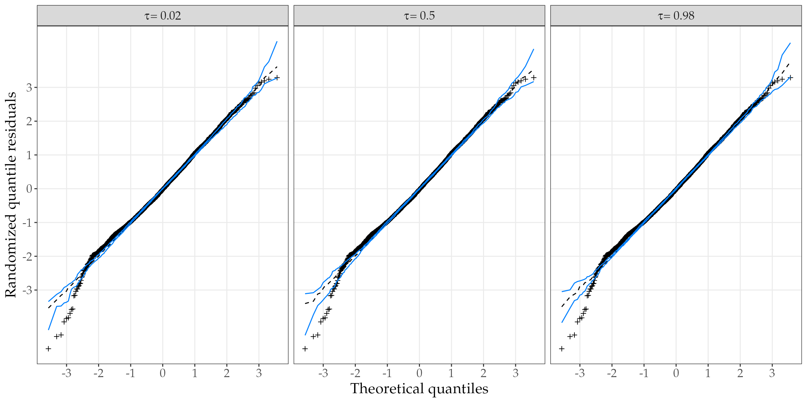
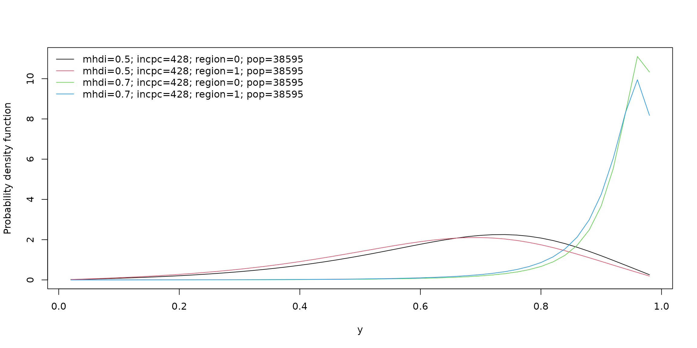

Structure and functionality
André Menezes
Last compiled on 2022-09-16
Source:vignettes/structure_functionality.Rmd
structure_functionality.RmdIntroduction
The unitquantreg R package provide efficient tools for estimation and inference in parametric quantile regression models for bounded data.
The current version of unitquantreg has 11 probability distributions available for user choice. The Table above lists the families of distributions, their abbreviations and the paper reference.
| Family | Abbreviation | Reference |
|---|---|---|
| arc-secant hyperbolic Weibull | ashw | Korkmaz et al. (2021) |
| Johnson-SB | johnsonsb | Johnson (1949) |
| Kumaraswamy | kum | Kumaraswamy, (1980) |
| log-extended Exponential-Geometric | leeg | Jodrá and Jiménez-Gamero (2020) |
| unit-Birnbaum-Saunders | ubs | Mazucheli, et al. (2021) |
| unit-Burr-XII | uburrxii | Korkmaz and Chesneau (2021) |
| unit-Chen | uchen | Korkmaz, et al. (2020) |
| unit-Generalized Half-Normal-E | ughne | Korkmaz MÇ (2020) |
| unit-Generalized Half-Normal-X | ughnx | New |
| unit-Gompertz | ugompertz | Mazucheli et al. (2019) |
| unit-Gumbel | ugumbel | New |
| unit-Logistic | ulogistic | Tadikamalla and Johnson (1982) |
| unit-Weibull | uweibull | Mazucheli, et al. (2018) |
The [dpqr]’s functions of the distributions are vectorized and implemented in C++. The log likelihood, score and hessian functions are also implemented in C++ in order to guarantee more computational efficiency.
The parameter estimation and inference are performed under the frequentist paradigm. Maximization of the log-likelihood function is done by optimization techniques available in the R through the optimx package, which is a general-purpose optimization wrapper function that allows the use of several R tools for optimization, including the existing stats::optim() function. To achieve quick and better convergence the analytical score function is use during the maximization. Also, standard errors of parameter estimates are computed using the analytical hessian matrix.
Structure
The unitquantreg package is built around the unitquantreg() function which perform the fit of parametric quantile regression models via likelihood method. The unitquantreg() function has standard arguments as stats::glm() function, and they are as follows:
#> function (formula, data, subset, na.action, tau, family, link = c("logit",
#> "probit", "cloglog", "cauchit"), link.theta = c("identity",
#> "log", "sqrt"), start = NULL, control = unitquantreg.control(),
#> model = TRUE, x = FALSE, y = TRUE)
#> NULLThe formula argument use the concept of Formula package allows multiple parts on the right-hand side, which indicates regression structure for the quantile and shape parameter of the distribution. For instance, formula = y ~ x1 | z1 means the following regression structure
\[ g_1(\mu) = \beta_0 + \beta_1\,x_1 \quad \textrm{and} \quad g_2(\theta) = \gamma_0 + \gamma_1\,z_1 \] where \(\mu\) indicates the quantile of order \(\tau\) and \(\theta\) is the shape parameter.
The tau argument indicates the quantile(s) to be estimated, being possible to specify a vector of quantiles. family argument specify the distribution family using the abbreviation of dpqr functions, listed in Table above.
The control argument controls the fitting process through the unitquantreg.control() function which returned a list and the default values are:
unlist(unitquantreg.control())
#> method hessian gradient
#> "BFGS" "FALSE" "TRUE"
#> maxit reltol factr
#> "5000" "1.49011611938477e-08" "1e+07"
#> trace dowarn starttests
#> "0" "FALSE" "FALSE"
#> fnscale
#> "1"The two most important arguments are hessian and gradient which tell the optimx::optimx() whether it should use the numerical hessian matrix and the analytical score vector, respectively. That is, if hessian = TRUE, then the standard errors are computed using the numerical hessian matrix. For detailed description of other arguments see the package documentation.
Object-oriented programming
The unitquanreg() function returns an object of class unitquanreg if the argument tau is scalar or unitquanregs if tau is a vector. The currently methods implemented for unitquantreg objects are:
methods(class = "unitquantreg")
#> [1] coef confint fitted hnp logLik
#> [6] model.frame model.matrix plot predict print
#> [11] residuals summary terms update vcov
#> see '?methods' for accessing help and source codeAnd for the unitquantregs objects are
methods(class = "unitquantregs")
#> [1] plot print summary
#> see '?methods' for accessing help and source codeIt is important to mention that the unitquantregs objects consists of a list with unitquantreg objects for according to the vector of tau.
Furthermore, the package provide functions designated for model comparison between uniquantreg objects. Particularly,
likelihood_stats()function computes likelihood-based statistics (Neg2LogLike, AIC, BIC and HQIC),vuong.test()function performs Vuong test between two fitted non nested models,pairwise.vuong.test()function performs pairwise Vuong test with adjusted p-value according tostats::p.adjust.methodsbetween fitted models
Finally, uniquantreg objects also permits use the inference methods functions lmtest::coeftest(), lmtest::coefci, lmtest::coefci, lmtest::waldtest and lmtest::lrtest implemented in lmtest to perform hypothesis test, confidence intervals for nested models.
Next, a detailed account of the usage of all these functions is provided.
Functionality
As in Mazucheli et al. (2020) consider the data set related to the access of people in households with piped water supply in the cities of Brazil from the Southeast and Northeast regions. The response variable phpws is the proportion of households with piped water supply. The covariates are:
mhdi: human development index.incpc: per capita income.region: 0 for southeast, 1 for northeast.pop: population.
data(water)
head(water)
#> phpws mhdi incpc region pop
#> 1 0.8957 0.672 438.56 1 104047
#> 2 0.6777 0.529 149.78 1 5905
#> 3 0.8673 0.500 172.55 1 11581
#> 4 0.7363 0.573 209.27 1 21851
#> 5 0.7726 0.513 179.92 1 23952
#> 6 0.8824 0.549 164.24 1 11063Assuming the following regression structure for the parameters: \[ \textrm{logit}(\mu_i) = \beta_0 + \beta_1 \texttt{mhdi}_{i1} + \beta_2 \texttt{incp}_{i2} + \beta_3 \texttt{region}_{i3} + \beta_4 \log\left(\texttt{pop}_{i4}\right), \] and \[ \log(\theta_i) = \gamma_0. \] for \(i = 1, \ldots, 3457\).
Model fitting
For \(\tau = 0.5\), that is, the median regression model we fitted for all families of distributions as follows:
lt_families <- list("unit-Weibull" = "uweibull",
"Kumaraswamy" = "kum",
"unit-Logistic" = "ulogistic",
"unit-Birnbaum-Saunders" = "ubs",
"log-extended Exponential-Geometric" = "leeg",
"unit-Chen" = "uchen",
"unit-Generalized Half-Normal-E" = "ughne",
"unit-Generalized Half-Normal-X" = "ughnx",
"unit-Gompertz" = "ugompertz",
"Johnson-SB" = "johnsonsb",
"unit-Burr-XII" = "uburrxii",
"arc-secant hyperbolic Weibull" = "ashw",
"unit-Gumbel" = "ugumbel")
lt_fits <- lapply(lt_families, function(fam) {
unitquantreg(formula = phpws ~ mhdi + incpc + region + log(pop), data = water,
tau = 0.5, family = fam, link = "logit", link.theta = "log")
})
t(sapply(lt_fits, coef))
#> (Intercept) mhdi incpc
#> unit-Weibull -6.514485 11.826177 2.600473e-04
#> Kumaraswamy -1.625951 4.843166 2.111029e-03
#> unit-Logistic -5.365469 10.508100 1.559636e-03
#> unit-Birnbaum-Saunders -6.556648 13.723681 6.499360e-04
#> log-extended Exponential-Geometric -4.712735 9.142144 1.928040e-03
#> unit-Chen -8.098012 13.560938 -6.162645e-05
#> unit-Generalized Half-Normal-E -6.598061 11.731146 -1.037014e-04
#> unit-Generalized Half-Normal-X -5.035562 13.186081 1.580614e-03
#> unit-Gompertz -6.260194 11.719934 4.103341e-04
#> Johnson-SB -5.993763 11.803290 1.144566e-03
#> unit-Burr-XII -5.811837 11.043123 3.777215e-04
#> arc-secant hyperbolic Weibull -7.363838 12.705584 7.957473e-05
#> unit-Gumbel -9.338592 14.990026 -5.503130e-04
#> region log(pop) log(theta)
#> unit-Weibull -0.26990871 0.10546762 0.17249694
#> Kumaraswamy -0.07860323 -0.04727081 1.75778137
#> unit-Logistic -0.15826000 0.01773368 0.63005907
#> unit-Birnbaum-Saunders -0.18081222 -0.02300195 0.00832919
#> log-extended Exponential-Geometric -0.18882479 0.02252007 1.68797084
#> unit-Chen -0.48153890 0.19218762 -0.25568492
#> unit-Generalized Half-Normal-E -0.37220694 0.14224250 -0.18418543
#> unit-Generalized Half-Normal-X -0.16993805 -0.18341181 -0.38141377
#> unit-Gompertz -0.23932329 0.09146941 -5.42477111
#> Johnson-SB -0.19500756 0.01823070 0.01748328
#> unit-Burr-XII -0.19140000 0.07565710 0.28322367
#> arc-secant hyperbolic Weibull -0.38168564 0.14972053 0.72098495
#> unit-Gumbel -0.62080389 0.25058612 -0.26073820Model comparison
Let’s check the likelihood-based statistics of fit
likelihood_stats(lt = lt_fits)
#>
#> Likelihood-based statistics of fit for unit quantile regression models
#>
#> Call: likelihood_stats(lt = lt_fits)
#>
#> Neg2LogLike AIC BIC HQIC
#> unit-Logistic -8443.029 -8431.029 -8394.140 -8417.855
#> Johnson-SB -8238.405 -8226.405 -8189.516 -8213.232
#> unit-Burr-XII -8096.114 -8084.114 -8047.225 -8070.941
#> unit-Weibull -7994.077 -7982.077 -7945.188 -7968.903
#> unit-Birnbaum-Saunders -7955.990 -7943.990 -7907.101 -7930.817
#> unit-Gompertz -7808.838 -7796.838 -7759.949 -7783.664
#> arc-secant hyperbolic Weibull -7679.482 -7667.482 -7630.593 -7654.308
#> log-extended Exponential-Geometric -7677.034 -7665.034 -7628.145 -7651.860
#> unit-Generalized Half-Normal-E -7496.966 -7484.966 -7448.077 -7471.792
#> Kumaraswamy -7188.498 -7176.498 -7139.609 -7163.324
#> unit-Chen -7016.542 -7004.542 -6967.653 -6991.368
#> unit-Generalized Half-Normal-X -6965.962 -6953.962 -6917.073 -6940.789
#> unit-Gumbel -6531.775 -6519.775 -6482.886 -6506.602According to the statistics the unit-Logistic, Johnson-SB, unit-Burr-XII and unit-Weibull were the best models. Now, let’s perform the pairwise vuong test to check if there is statistical significant difference between the four models.
lt_chosen <- lt_fits[c("unit-Logistic", "Johnson-SB", "unit-Burr-XII", "unit-Weibull")]
pairwise.vuong.test(lt = lt_chosen)
#>
#> Pairwise comparisons using Vuong likelihood ratio test for non-nested models
#>
#> data: unitquantreg(formula = phpws ~ mhdi + incpc + region + log(pop),
#> data = water, tau = 0.5, family = fam, link = "logit", link.theta = "log")
#>
#> unit-Logistic Johnson-SB unit-Burr-XII
#> Johnson-SB 0.00031 - -
#> unit-Burr-XII 3.9e-07 0.09659 -
#> unit-Weibull 8.8e-11 0.00013 0.04868
#>
#> P value adjustment method: holmThe adjusted p-values of pairwise vuong tests shows that there is a large statistical significance difference between the models. In particular, the pairwise comparison between unit-Logistic and the other models provide a smaller p-values, indicating that the unit-Logistic median regression model is the most suitable model for this data set comparing to the others families of distributions.
Diagnostic analysis
It is possible to check model assumptions from diagnostic plots using the plot() function method for unitquantreg objects. The residuals() method provides quantile, cox-snell, working and partial residuals type. The randomzide quantile residuals is the default choice of plot() method.
par(oldpar)Plots of the residuals against the fitted linear predictor and the residuals against indices of observations are the tools for diagnostic analysis to check the structural form of the model. Two features of the plots are important:
Trends: Any trends appearing in these plots indicate that the systematic component can be improved. This could mean changing the link function, adding extra explanatory variables, or transforming the explanatory variables.
Constant variation: If the random component is correct then the variance of the points is approximately constant.
Working residuals versus linear predictor is used to check possible misspecification of link function and Half-normal plot of residuals to check distribution assumption.
Another best practice in diagnostic analysis is to inspect the (Half)-Normal plots with simulated envelope for several quantile value. This is done to obtain a more robust evaluation of the model assumptions. Thus, let’s fit the unit-Logistic quantile regression model for various quantiles.
system.time(
fits_ulogistic <- unitquantreg(formula = phpws ~ mhdi + incpc + region + log(pop),
data = water, tau = 1:49/50,
family = "ulogistic", link = "logit",
link.theta = "log"))
#> user system elapsed
#> 11.880 0.000 11.881Now we can check the (Half)-Normal plots using the output of hnp() method.
library(ggplot2)
get_data <- function(obj) {
tmp <- hnp(obj, halfnormal = FALSE, plot = FALSE, nsim = 10)
tmp <- as.data.frame(do.call("cbind", tmp))
tmp$tau <- as.character(obj$tau)
tmp
}
chosen_taus <- c("0.02", "0.5", "0.98")
df_plot <- do.call("rbind", lapply(fits_ulogistic[chosen_taus], get_data))
df_plot$tau <- paste0(expression(tau), " == ", df_plot$tau)
ggplot(df_plot, aes(x=teo, y=obs)) +
facet_wrap(~tau, labeller = label_parsed) +
geom_point(shape = 3, size = 1.4) +
geom_line(aes(y = median), linetype = "dashed") +
geom_line(aes(y = lower), col = "#0080ff") +
geom_line(aes(y = upper), col = "#0080ff") +
theme_bw() +
labs(x = "Theoretical quantiles", y = "Randomized quantile residuals") +
scale_x_continuous(breaks = seq(-3, 3, by = 1)) +
scale_y_continuous(breaks = seq(-3, 3, by = 1)) +
theme_bw() +
theme(text = element_text(size = 16, family = "Palatino"),
panel.grid.minor = element_blank())
Inference results
Inference results about the parameter estimates can be accessed through the summary method. For instance,
summary(lt_fits[["unit-Logistic"]])
#>
#> Wald-tests for unit-Logistic quantile regression model
#>
#> Call: unitquantreg(formula = phpws ~ mhdi + incpc + region + log(pop),
#> data = water, tau = 0.5, family = fam, link = "logit", link.theta = "log")
#>
#> Mu coefficients: (quantile model with logit link and tau = 0.5):
#> Estimate Std. Error Z value Pr(>|z|)
#> (Intercept) -5.3654690 0.3373263 -15.906 < 2e-16 ***
#> mhdi 10.5080995 0.5717793 18.378 < 2e-16 ***
#> incpc 0.0015596 0.0001706 9.140 < 2e-16 ***
#> region -0.1582600 0.0488825 -3.238 0.00121 **
#> log(pop) 0.0177337 0.0167306 1.060 0.28917
#> ---
#> Signif. codes: 0 '***' 0.001 '**' 0.01 '*' 0.05 '.' 0.1 ' ' 1
#>
#> Model with constant shape:
#> Estimate Std. Error Z value Pr(>|z|)
#> log(theta) 0.63006 0.01421 44.35 <2e-16 ***
#> ---
#> Signif. codes: 0 '***' 0.001 '**' 0.01 '*' 0.05 '.' 0.1 ' ' 1
#>
#> Residual degrees of freedom: 3451
#> Log-likelihood: 4221.514
#> Number of iterations: 65For unitquantregs objects the plot method provide a convenience to check the significance as well as the effect of estimate along the specify quantile value.
plot(fits_ulogistic, which = "coef", mean_effect = FALSE)Curiously, the unit-Logistic quantile regression models capture constant effect for all covariates along the different quantiles. In contrast, the unit-Weibull model (the fourth best model) found a decrease effect of mhdi covaraite on the response as the quantile increases and increase effects of incpc and region on the response variable as the quantile increases.
system.time(
fits_uweibull <- unitquantreg(formula = phpws ~ mhdi + incpc + region + log(pop),
data = water, tau = 1:49/50,
family = "uweibull", link = "logit",
link.theta = "log"))
#> user system elapsed
#> 13.070 0.004 13.076
plot(fits_uweibull, which = "coef")Using the plot() method with argument which = "conddist" for unitquantregs objects it is possible to estimate and visualize the conditional distribution of a response variable at different values of covariates. For instance,
lt_data <- list(mhdi = c(0.5, 0.7), incpc = round(mean(water$incpc)),
region = c(1, 0), pop = round(mean(water$pop)))
plot(fits_ulogistic, which = "conddist", at_obs = lt_data, at_avg = FALSE,
dist_type = "density")
plot(fits_ulogistic, which = "conddist", at_obs = lt_data, at_avg = FALSE,
dist_type = "cdf")Session info
sessionInfo()
#> R version 4.2.1 (2022-06-23)
#> Platform: x86_64-pc-linux-gnu (64-bit)
#> Running under: Ubuntu 20.04.5 LTS
#>
#> Matrix products: default
#> BLAS: /usr/lib/x86_64-linux-gnu/blas/libblas.so.3.9.0
#> LAPACK: /usr/lib/x86_64-linux-gnu/lapack/liblapack.so.3.9.0
#>
#> locale:
#> [1] LC_CTYPE=C.UTF-8 LC_NUMERIC=C LC_TIME=C.UTF-8
#> [4] LC_COLLATE=C.UTF-8 LC_MONETARY=C.UTF-8 LC_MESSAGES=C.UTF-8
#> [7] LC_PAPER=C.UTF-8 LC_NAME=C LC_ADDRESS=C
#> [10] LC_TELEPHONE=C LC_MEASUREMENT=C.UTF-8 LC_IDENTIFICATION=C
#>
#> attached base packages:
#> [1] stats graphics grDevices utils datasets methods base
#>
#> other attached packages:
#> [1] ggplot2_3.3.6 unitquantreg_0.0.3
#>
#> loaded via a namespace (and not attached):
#> [1] xfun_0.33 bslib_0.4.0 purrr_0.3.4
#> [4] splines_4.2.1 lattice_0.20-45 colorspace_2.0-3
#> [7] vctrs_0.4.1 htmltools_0.5.3 yaml_2.3.5
#> [10] utf8_1.2.2 survival_3.4-0 rlang_1.0.5
#> [13] pkgdown_2.0.6 jquerylib_0.1.4 pillar_1.8.1
#> [16] withr_2.5.0 glue_1.6.2 optimx_2022-4.30
#> [19] lifecycle_1.0.2 stringr_1.4.1 MatrixModels_0.5-1
#> [22] munsell_0.5.0 gtable_0.3.1 ragg_1.2.2
#> [25] codetools_0.2-18 memoise_2.0.1 evaluate_0.16
#> [28] knitr_1.40 fastmap_1.1.0 SparseM_1.81
#> [31] quantreg_5.94 fansi_1.0.3 highr_0.9
#> [34] Rcpp_1.0.9 scales_1.2.1 cachem_1.0.6
#> [37] desc_1.4.2 jsonlite_1.8.0 farver_2.1.1
#> [40] systemfonts_1.0.4 fs_1.5.2 textshaping_0.3.6
#> [43] digest_0.6.29 stringi_1.7.8 numDeriv_2016.8-1.1
#> [46] grid_4.2.1 rprojroot_2.0.3 cli_3.4.0
#> [49] tools_4.2.1 magrittr_2.0.3 sass_0.4.2
#> [52] tibble_3.1.8 Formula_1.2-4 pkgconfig_2.0.3
#> [55] MASS_7.3-58.1 Matrix_1.5-1 rmarkdown_2.16
#> [58] R6_2.5.1 compiler_4.2.1